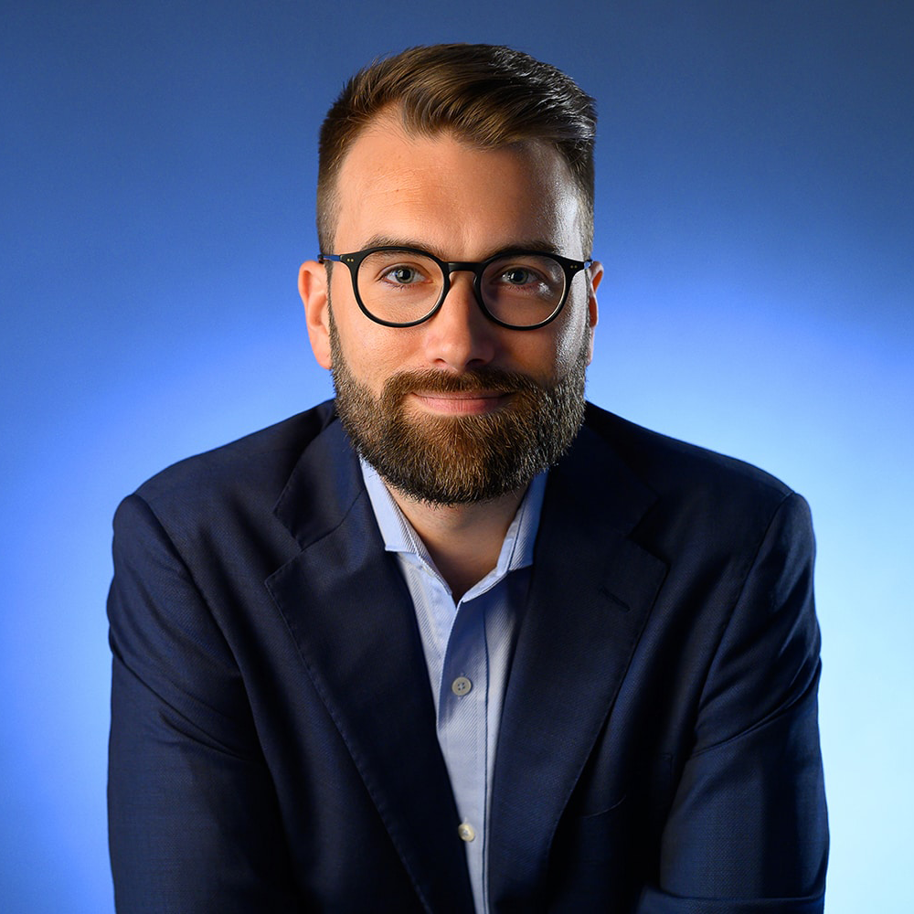

Resume
Bartłomiej Ćwiklak
Web Developer & Graphic Designer, Based in Lodz
 |
+48 535 325 956 |
| bartlomiej.cwiklak@gmail.com |
üìå Experience
- Senior Front-End Designer (2023 - present)
I am a senior front-end developer for Apple, where I am tasked with creating the stunning visuals that made the company famous.
- Front-End Developer (2019 - 2023)
I was one of the front-end developers for the ever growing Figma, which allowed me to grow my understanding of design overall.
- Junior Front-End Designer (2018 - 2019)
Adobe was where I started my journey with fully professional web development. I helped with creating some of the basic components of their products websites, such as Adobe Photoshop.
üìö Education
- Lodz University of Technology (2023 - present)
At Lodz University of Technology I study computer science - major with most interest in joining. At IFE, I have many opportunites for creating international friendships and collaborations.
- Zespół Szkół Elektronicznych im. Bohaterów Westerplatte w Radomiu (2019 - 2024)
My high school allowed me to grow my interest (and experience) in web development, which made it easier for me to have fun creating beautiful websites.
üåç Languages
|
❤️ Hobbies
|